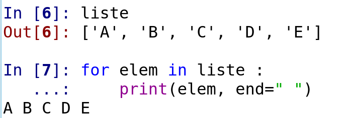
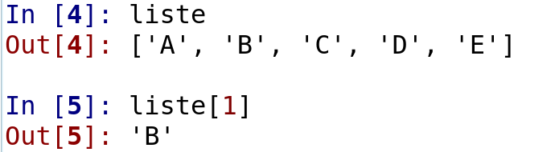
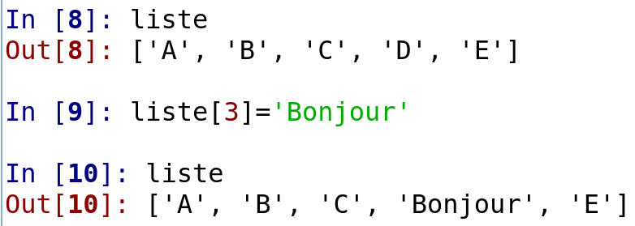
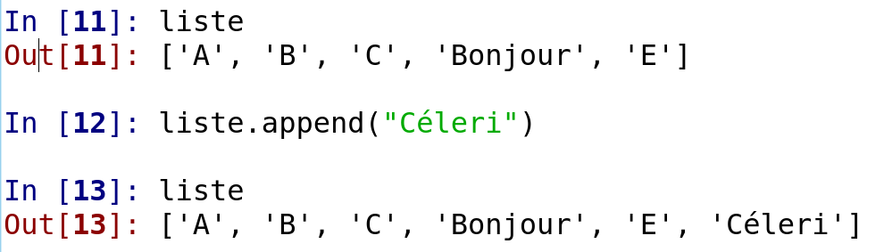
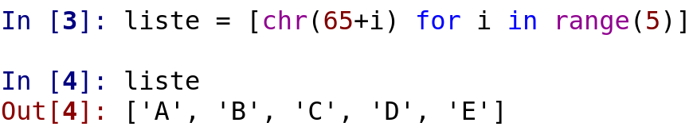
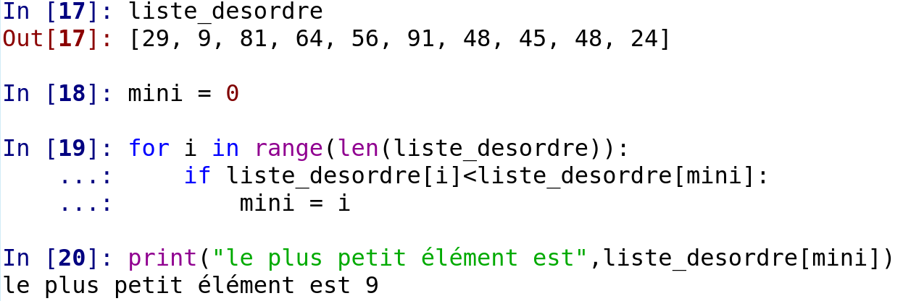
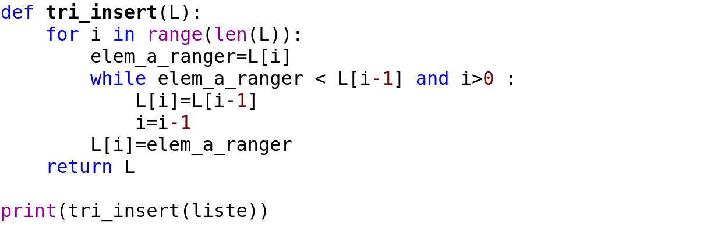
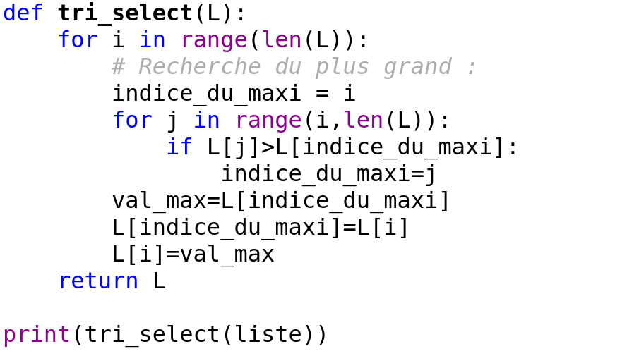

Numérique et Sciences Informatique
Jules ROY, 1ère H
Sommaire
III.Numération & Codage de l'Information
IV.Les listes et les différents types de tris
En début d'année, j'ai créé ma première page html. Celle-ci portait sur l'auteur-compositeur-interprète The Weeknd. Le lien ci-dessous permet de la consulter.
Première page html Jules ROY
1.Bien démarrer en Python
Choisir le logiciel pour programmer :
→ Edupython : éditeur de texte : PyScripter
→ Anaconda : Editeur de texte : Spyder
→ Mu-Editor
Nommer les variables de manière explicite : « nb10 » et non pas « a », « reste » et non pas « b »
Erreurs habituelles :
Après une boucle for/while ou un if, mettre un « : ».
Tout ce qui est dans une boucle est indenté dans la boucle (il y a 4 espaces). Tout ce qui est en dehors est au même niveau ou décalé vers la gauche.
Affectation de variables
Pour donner une valeur à une variable on utilise l’opérateur =
Exemple : compteur = 3 la variable compteur va prendre la valeur 3.
Ayez toujours avec vous le mémento python.
Utilisation de la méthode « input »
« input » permet d’interagir avec l’utilisateur en lui demandant de rentrer une chaine de caractère au clavier. Qu’il rentre « toto » ou « 1234 », cela sera lu comme une chaîne de caractère et non comme un chiffre.
Exemple : dateDeNaissance = input(‘’Merci de rentrer votre date de naissance avec les /’’)
Si on veut récupérer la valeur numérique de ce qui est rentré il faut dire à python de transformer (on dit « transtyper »). Dans notre cas ici, on veut avoir un entier à la fin, c’est à dire de type « integer » (entier relatif)
En deux lignes :
nb10 = input(‘quel nombre voulez-vous calculer’)
nb10 = int(nb10)
En une ligne :
nb10 = int(input(‘quel nombre voulez-vous calculer’))
1.Rappels sur le système de numération décimal (base 10):
Le système décimal utilise 10 symboles (0, 1, 2, 3, 4, 5, 6, 7, 8, 9). En utilisant ces symboles comme chiffres dans un nombre, on parvient à exprimer n'importe quelle grandeur numérique.
Le système décimal est dit à poids positionnels, en ce sens que la valeur d'un chiffre dépend de sa position (rang) dans le nombre.
Par exemple : 453 = 4 centaines + 5 dizaines + 3 unités
4 est le chiffre de poids fort (ou le plus élevé : MS Most significant) poids = 100
3 est le chiffre poids faible (ou le plus faible : LS Less significant) poids = 1
2.Le binaire (base 2) dans les systèmes numériques
Les informations traitées par le microprocesseur dans un système numérique sont de différents types (nombre, instruction, image, vidéo, son, …) mais elles sont toujours représentées dans un format
binaire. Seul le codage change en fonction du type de données à traiter. En binaire, une information élémentaire est appelée BIT (Binary Digit) et ne peut prendre que deux valeurs Logiques :
0L ou 1L. Comment, dans un ordinateur, sont codés les 1 et les 0 ? 0 le courant ne passe pas, 1 le courant passe. Une information plus complexe sera codée sur plusieurs bits.
On appelle cet ensemble un mot. Par exemple, dans un ordinateur, chaque caractère est codé dans un mot de 8 bits appelé octet.
Tout nombre peut s'écrire en binaire sous la forme :
N2 = an x 2n +... + a2x 22+ a1 x 21 + a0 x 20 + a-1 x 2-1 +.. + a-m x 2-m
Le bit de rang n est le bit le plus significatif (MSB : Most Signicant Bit)
Le bit de rang m est le bit le moins significatif (LSB : Less Significant Bit)
3.L’hexadécimal (base 16)
L’écriture et la lecture des nombres binaires est pénible, on préfère utiliser leur représentation hexadécimale qui utilise 16 symboles : dix chiffres 0 à 9 puis les lettres majuscules A, B, C, D, E, F.
La correspondance binaire / hexadécimal est directe et facile à établir (tableau ci-dessous).
4.La représentation des caractères alphanumériques
Dans un ordinateur, chaque caractère (lettre, nombre, symbole, caractère de contrôle) est codé dans un octet.
Sous Windows, la table « Code page 1252 » indique les codes des caractères gérés pour le Français.
Le tableau suivant indique le codage des caractères latins utilisés sur les ordinateurs fonctionnant sous Windows. Il est construit à partir de la table ASCII (American Standard Code for Information Interchange) pour les 128 premiers caractères. Les numéros 81, 8D, 8F, 90, et 9D non utilisés sont signalés par la couleur vert pâle.
Remarque très importante:
À partir du moment où on contraint la longueur d’un mot (8, 32, 64 etc.), les calculs ne peuvent être qu’approchés. Plus le mot est grand, plus la précision est bonne mais il y a TOUJOURS une erreur. Un ordinateur calcul vite mais toujours de manière approchée (pour ne pas dire faux).
IV: Les listes et les différents types de tris
Une liste c'est quoi ?
Exemples de listes en python :
- [ 1, 2, 3, 4, 5]
- ['A','B','C','TOTO !']
- [['banane','orange','abricot'],['salade','carotte',celeri']]
parcours sur les listes

Récupération d'un élément d'indice i

Affectation à un emplacement d'indice i

Ajout d'un élément

Liste pas compréhension

Recherche du plus petit élément

Méthodes de tris
Cette année, nous avons vu 2 méthodes de tris, mais il en existe d'autres !!!
Tri par insertion
On regarde un élément i de la liste. À un instant donné, tous les éléments à gauche de i sont triés.
On met l'élément i de côté et on déplace les éléments à sa gauche jusqu'à trouver la place de l'élément mis de côté dans la
liste triée, puis on l'y insère
En python :


Tri par sélection
A un instant donné, on parcoure la liste à partir de l'élément i, à la recherche de l'élément le plus petit.
Quand on l'a trouvé, on le permute avec l'élément i
En python :
